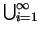
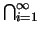
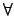
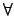
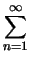
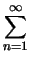

Espacios Muestrales Discretos
Las siguientes definiciones constituyen un punto de partida importante para iniciar el estudio de la materia que nos interesa. De hecho constituyen caracterizaciones operacionales de los tipos de probabilidad discutidos, en la sección introductoria.
Ejemplo 1
Se lanza un par de dados que no están cargados y se registra la suma de las caras. Determine la probabilidad del evento T : la suma de los números en ambas caras es 6.
Solución
En este caso, por (1.1) hay 36 posibles resultados de los cuales (3, 3),(1, 5),(5, 1),(2, 4) y (4, 2) suman 6 así:
Ejemplo 2
En una caja hay 4 libros de Inglés y 3 de Ruso. Se escoge al azar un libro de la caja. >Cuál es la probabilidad de que el libro escogido sea de Ruso.?
Solución
Sea R el evento se escoge un libro de Ruso. Hay 3 casos en los cuales al escoger el libro resulta ser de Ruso y un total de 7 escogencias por lo tanto:
Funciones de Probabilidad Las definiciones (10),(11), caracterizan la probabilidad de un evento en términos de la frecuencia relativa
La primera permite la asignación de una medida de probabilidad a un evento mediante la experimentación. La segunda es mucho más clara y en el sentido operacional aceptable, pero requieren que es espacio muestral sea finito.
Por otro lado la afirmaciones de que ``los resultados pueden ocurrir igualmente, y son mutuamente excluyentes,'' difícilmente pueden ser demostradas, y es usual que no se cumplan.
Esa no es una limitación importante pues esta última definición puede generalizarse para que permita caracterizar cualquier probabilidad. No obstante se hace necesario establecer algunas condiciones a la colección de todos los eventos del espacio muestral.
Dado un espacio muestral  , se asume que la
familia
, se asume que la
familia  de todos los eventos cumple las siguientes propiedades:
de todos los eventos cumple las siguientes propiedades:
- Se tiene que


 y
y
 .
.
- Si
A , entonces
 A .
A .
- Si
A1, A2, A3,... son elementos de , también
lo
es
Ai.
Cualquier conjunto que cumpla con las propiedades anteriores se
llama una  -álgebra.
-álgebra.
Con estas propiedades se puede demostrar con alguna facilidad los siguientes hechos, referimos al lector interesado a [2]:
- Si los eventos
A1, A2, A3,... son elementos de , también lo es
Ai.
- La unión finita de eventos de está en .
- Si A y B están es también lo está
A
 B.
B.
Una función de probabilidad definida
sobre la  -álgebra de todos los eventos de un espacio
muestral
-álgebra de todos los eventos de un espacio
muestral  , debe cumplir las siguientes propiedades:
, debe cumplir las siguientes propiedades:
-
0
 P[A] para todo evento A.
P[A] para todo evento A.
-
P[] = 1.
- Si
A y B son eventos mutuamente excluyentes
entonces
P[A
 B] = P[A] + P[B].
B] = P[A] + P[B].
- Si los eventos
A1, A2, A3,... son eventos
mutuamente excluyentes (
Ai
 Aj = , i
Aj = , i  j), entonces
P[
j), entonces
P[ An] = P[An].
An] = P[An].
El concepto de medida de probabilidad o función de probabilidad juega un rol básico al momento de estudiar las probabilidades, de hecho cuando tenemos un experimento aleatorio y queremos estudiarlo probabilísticamente lo que necesitamos es definir una de tales medidas. Buena parte de lo que haremos en secciones posteriores es definir medidas de probabilidad sobre espacios muestrales.
En las siguientes páginas discutiremos los principios básicos de la probabilidad.